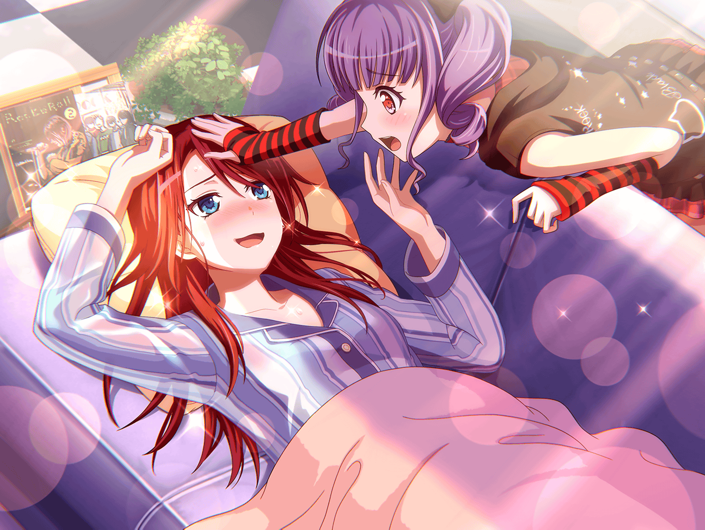

羽丘女子学園 廊下
巴
（昨日まで風邪だったのが嘘みたいに体が軽い。
逆に調子がよすぎて、怖いくらいだ）
巴
これも、全部あこの看病と、
差し入れをしてくれたつぐ達のおかげかな？

羽丘女子学園 1-B
巴
おはよう
つぐみ
あっ巴ちゃん！
巴
お、つぐ！
おはよ
つぐみ
おはよう！
もう具合はいいの？
巴
すっかりよくなったよ。
すぐにでもライブできるぐらいにね
つぐみ
あはは、さすがに病み上がりなんだから、
ライブをするのはもう少し待った方がいいと思うよ
つぐみ
でも、よかった。
体調がよくなって……
巴
つぐ……心配かけて、ごめんな？
巴
ついさっき止められたばかりだけど、
なんだったら本当にライブしちゃうか？
つぐみ
ふふ、本当に大丈夫そうだね
巴
ああ、つぐのしょうが紅茶をたくさん飲んだからな。
おかげで今も体がポカポカだよ。
差し入れしてくれて、ありがとな
つぐみ
えへへ……
巴ちゃんの役に立ったならよかった
つぐみ
でも、しょうが紅茶って、体がすごく温まるけど、
味が独特だから、持って行くかちょっと悩んだんだ。
大丈夫だったかな？ 飲みにくくなかった？
巴
いや、おいしかったよ。
なんせ、あこがハチミツをたっぷり入れてくれたからな
つぐみ
あこちゃんが？
巴
そうなんだよ。実はさ、アタシが風邪で寝込んでる間、
あこが付きっ切りで看病してくれたんだよ
つぐみ
へぇ、そうだったんだ。
昔からあこちゃん知ってるけど……
ふふ、あこちゃん、成長したんだね
巴
ああ、しばらく見ないうちに大きくなって、っていう
セリフをよく聞くけど、本当にその通りでさ
巴
あこ、昔は料理なんてできなかったのに
アタシのために鶏団子のスープまで作ってくれたんだよ
つぐみ
鶏団子……あ、はぐみちゃんの差し入れだね！
つぐみ
あこちゃん、はぐみちゃんのお勧め通り、
ちゃんとスープにしたんだ。
ふふ、すごいね！
巴
つぐもそう思うだろ？
それだけじゃなくて……
つぐみ
（巴ちゃん、すごく楽しそうに話してる）
つぐみ
（いいな～。
私、ひとりっ子だから、
ちょっとうらやましいかも）
あこ
失礼しまーす！
おねーちゃん、いますかー？
巴
あれ、あこ？
どうして高等部の校舎にいるんだ？
あこ
あっ！ おねーちゃん、見～っけ！
あこ
はい、コレ！
ジャージ忘れてたから持ってきてあげたよ
巴
あ、そうだ！
今日は体育の授業があるんだった！
つぐみ
あこちゃん、わざわざ巴ちゃんのために
ジャージ持ってきたんだ？
えらいね！
あこ
えへへ
おねーちゃんのピンチはあこが助けるよ！
あこ
だって、おねーちゃんの妹だもん！！
あこ
……って言っても、
あこも一緒に登校した時に、
渡すの忘れちゃってたんだけどねっ
つぐみ
ううん、それでもえらいと思うよ。
思い出して、わざわざ教室まで届けにきたんだもん
つぐみ
それに、さっきの
『おねーちゃんのピンチはあこが助けるよ！』って言葉……
つぐみ
正義のヒーローみたいで、カッコよかったよ！
あこ
か、かっこいい……ホント！？
つぐみ
うん、ほんと！
はぁ、いいな、巴ちゃん。
私もピンチの時に助けてほしいな～
つぐみ
あこちゃん。
もし、私が風邪を引いてピンチになったら
看病してくれる？
あこ
もちろんだよ！
つぐちんも、あこが看病してあげる！
つぐみ
わぁ、ありがとう！
巴
そうか……それは残念だなぁ
あこ
え、どうして？
巴
だって、あこはアタシだけを看病してくれると
思ってたのに……
それがつぐにも看病するって言うんだもんな～……
あこ
そ、それは……！？
つぐみ
巴ちゃん……？
つぐみ
（どうしたんだろう？
巴ちゃんがこんな意地悪なこと言うなんて、
珍しい気が……）
巴
…………
つぐみ
（あ……ふふ、そういうことだね）
あこ
おねーちゃん、あこは……！
つぐみ
わ、私もあこちゃんに看病してほしいな～
あこ
うぅ……！！
巴
どうなんだ、あこ？
あこ
うーー！！
つ、つぐちん……ごめんね！
あこ
やっぱり、あこが看病するのは
おねーちゃんだけだよ！
巴
ぷっ……あはは……！
つぐみ
ふ……ふふ……ふふふ……！
あこ
お、おねーちゃん、つぐちん……？
巴
ご、ごめんごめん、あこ
つぐみ
うん、ごめんねっ
巴
ふふ、あこがそう言ってくれるっていうのは……
巴・つぐみ
わかってたよ